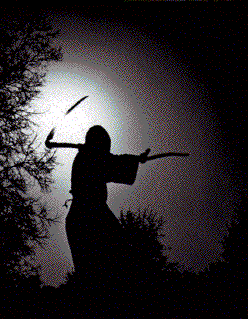

|
|
||
|
|
|
|
|
||
|
|
|
|
ARCHIVE MAINTAINER'S NOTE:
This site is being maintained in a largely frozen status as a record of what the alt.suicide.holiday USENET newsgroup was like. Information about the newsgroup, FAQs, associated lists, and so forth may not be current. Consult the relevant resources to learn how they define their group, list, or whatever at this time. This site neither has, nor has ever had, either chatrooms or posting areas. It simply serves as a repository for some posts from the alt.suicide.holiday newsgroup and some of the spinoff email lists. If you've read somewhere that you can find chatrooms or places to post on this site, that information was incorrect. Some pages have links to other sites which have such facilities, but as no substantive changes to this site have been made since sometime in 2002, those links may or may not work. |
Be here now
the newsgroup, related resources, and a summary introduction
Guide-files
From guides to the group to roadmaps to eternity
Expressions
thoughts expressed from ashers, and expressions of ashers' favorites among
others' expressions, from the mundane to the final
Influences
from outside the a.s.h world, yet having such a major effect within

|
"The darkness is death - we can
speak, but we are not heard. We can scream but they turn their backs.
We can run, but we cannot catch them. It is the dream where arms and
legs won't work they way they should, and the air is too thick to
breathe. Loved ones walk a mile ahead, forgetting to stop as we fall
behind. This is the reality of the darkness. We are buried alive inside
ourselves. " |
|
|
|